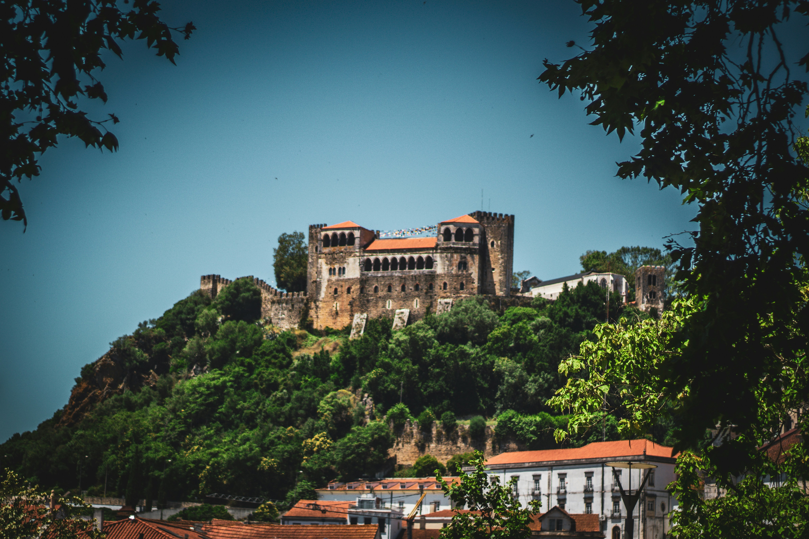

Goals
The Roleplay Research Retreat (R3) is a research-based event exploring how games and their mechanics can contribute to facets of collaborative storytelling, emergent narrative and the mythos/historical events that emerge within the player group. This retreat aims to address the gap between research and practice, looking at the ways in which academics can apply their tools to the discussion, development (e.g. via asset creation), and evaluation of role-playing games. This includes but is not limited to tabletop RPGs, technology-enhanced RPGs, boardgame renditions of RPGs, and storygames.
The Roleplay Research Retreat follows successful academic retreats such as Dagstuhl and Shonan, where an intense period of collaboration is interspersed with social events and networking. In R3 in particular, however, the number of participants is limited in order to enable more applied research by testing different RPG systems and approaches in-between theoretical discussions during the days of the retreat. The outcome is expected to be a number of reports and publications along these directions.
Organizers
Phil Lopes is an Assistant Professor at Lusófona University, his focus lies at the crossroads of Digital Game AI, Affective Computing, Human Computer Interfaces, Virtual Cinematic Productions and Game Design. He has published in fields such as affective computing, procedural content generation and game artificial intelligence. More recently, his research has shifted towards exploring the influence of collaborative storytelling and its influence on player experience and creativity, for the construction of transdisciplinary systems capable of leveraging collaborative creativity using playful game mechanics for fields beyond entertainment.
David Melhart is an Assistant Professor at the Metaverse Lab of the University of Southern Denmark (SDU). His research focuses on User Research, Player Modelling, Annotation Tools for Affective Computing. He was a keynote speaker and panellist at the 26th European Conference on Artificial Intelligence 2023 - Ethics of Game AI Workshop EGAI @ ECAI 2023, Communication Chair of FDG 2020, Workshop and Panels Chair of FDG2023, has been a recurring Organizer and Publicity Chair of the Summer School series on Artificial Intelligence and Games (2018-2025), and currently serves as an Editorial Assistant to the IEEE Transactions on Games. His interests in RPG research are focused on Player Experience Research, Game Design, and Therapeutic Applications of Tabletop Role-Playing Games (TA-RPGs) for ADHD and autism related interventions.
Antonios Liapis is an Associate Professor at the Institute of Digital Games, University of Malta, where he bridges the gap between game technology and game design in courses focusing on human-computer creativity, digital prototyping and game development. His research focuses on Artificial Intelligence as an autonomous creator or as a facilitator of human creativity. His work includes computationally intelligent tools for game design, as well as computational creators that blend semantics, visuals, sound, plot and level structure to create horror games, adventure games and more. He has also co-organized numerous game jams, and has participated in even more!
Venue
The third event (and first winter event) of the R3 is taking place in Galicia, Spain in the city of Pontevedra on 27 - 30 November 2025. The event is organized by the Lusófona University, the University of Southern Denmark, and the University of Malta. Also known as the "Good City", the city of Pontevedra is a city of art and history. It is an ideal venue for R3 because it blends medieval heritage and vibrant modern life, with awards for urban planning and urban safety. Highlights include its monumental religious buildings, the Burgo Bridge, the 18th century Mugartegui Palace, and the nearby beaches of Praia de Cabeceira and Praia de Lourido. The city also hosts the Faculty of Fine Arts, which can offer synergies in the educational aspect of Roleplaying Games.

Agenda
The agenda of the retreat is focused on research collaboration and knowledge sharing. The retreat begins with an informal social event, followed by daily activities that include brainstorming sessions, idea generation, and action planning. Each day features a mandatory forest hike to encourage reflection and informal discussions. The final day is dedicated to summarizing findings, planning future actions, and exploring funding opportunities. The retreat emphasizes consensus-building, interdisciplinary collaboration, and sustainability of research efforts. You can find the full agenda here.
Events
Second Roleplay Research Retreat
The second event of the R3 took place in the Portuguese hinterlands around the city of Leiria from 28 June to 4 July 2025, organized by Lusófona University and the University of Malta. Leiria is a charming city that combines medieval heritage with modern vibrancy. Highlights include the majestic Leiria Castle overlooking the town, the picturesque old quarter with its winding streets and traditional houses, and the nearby beaches of São Pedro de Moel and Vieira de Leiria, ideal for a seaside escape. The surrounding Pinhal de Leiria, a historic maritime pine forest planted in the 13th century, offered participants a serene natural setting for reflection and discussion.

First Roleplay Research Retreat
The first event of the R3 took place in Obidos, Portugal on 24-28 July 2023, with the support of the Municipality of Obidos and the Lusófona University. The mediaeval town of Obidos is one of the most picturesque and well preserved in Portugal. Highlights include the well preserved castle within the walls, the maze of streets and white houses perfect for a stroll, and the crystal waters of the Foz do Arelho beach in the northern part of the lagoon that crosses into the Atlantic Ocean.